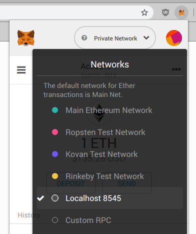

<!doctype html>
<html lang="en">
  <head>
    <meta charset="utf-8">

    <title>Introduction to Blockchain Security Practices</title>

    <meta name="author" content="Doug Hoyte">

    <meta name="apple-mobile-web-app-capable" content="yes" />
    <meta name="apple-mobile-web-app-status-bar-style" content="black-translucent" />

    <meta name="viewport" content="width=device-width, initial-scale=1.0, maximum-scale=1.0, user-scalable=no, minimal-ui">

    <link rel="stylesheet" href="../reveal.js/css/reveal.css">
    <link rel="stylesheet" href="../reveal.js/css/theme/black.css" id="theme">

    <!-- Code syntax highlighting -->
    <link rel="stylesheet" href="../reveal.js/lib/css/zenburn.css">

    <!-- Printing and PDF exports -->
    <script>
      var link = document.createElement( 'link' );
      link.rel = 'stylesheet';
      link.type = 'text/css';
      link.href = window.location.search.match( /print-pdf/gi ) ? '../reveal.js/css/print/pdf.css' : '../reveal.js/css/print/paper.css';
      document.getElementsByTagName( 'head' )[0].appendChild( link );
    </script>

    <!--[if lt IE 9]>
    <script src="../reveal.js/lib/js/html5shiv.js"></script>
    <![endif]-->

    <style>
      .reveal .slides h1, .reveal .slides h2, .reveal .slides h3 {
        text-transform: none;
      }

      .two-column {
        display: flex;
        flex-wrap: wrap;
      }

      .two-column em {
        margin: 20px;
      }

      .reveal .big-and-bold {
        font-weight: bold;
        font-size: 135%;
      }

      .reveal .shrunk-a-bit {
        font-size: 90%;
      }

      .reveal .shrunk-a-bit pre {
        width: 100%;
      }
    </style>
  </head>

  <body>
    <div class="reveal">
      <div class="slides">

<!------------------------------------------------------->


<section data-markdown><script type="text/template">

## Introduction to Blockchain Security Practices

### Lesson 2: Blockchain Architecture

*Doug Hoyte, March 2019*

</script></section>


<section data-markdown><script type="text/template">

## Lesson Topics

* Transactions
* Nodes and RPC
* Interfaces

</script></section>


<section data-markdown><script type="text/template">

## Distributed data-base

* A blockchain is a distributed data-base (DB)
* Everyone agrees on a basic set of rules about how it can be changed
  * Example rule: only the owner of an account can send transactions from that account
* When a blockchain is working properly, everyone in the world has the exact same copy of the DB
  * How this happens is called a *consensus protocol*

</script></section>


<section data-markdown><script type="text/template">

## Consensus


</script></section>


<section data-markdown><script type="text/template">

## Deterministic effects

* When applying a transaction to the DB, everyone in the world must get the same resulting DB
* So: all transactions must be **deterministic**
  * Cannot get input from outside world
  * Cannot generate random numbers
  * Cannot depend on anything except what is already in the DB

</script></section>


<section data-markdown><script type="text/template">

## UTXO versus Accounts

* Bitcoin uses *Unspent Transaction Outputs*
  * Your balance doesn't exist in one place, it's the sum of all unspent "cheques" you've received
* Ethereum uses *Accounts*
  * Your balance exists in a single record in the DB

</script></section>


<section data-markdown><script type="text/template">

## Replay attacks

* Imagine Alice signs and sends a transaction:
  * *I, Alice, send 10 coins to Bob*
* Bob waits a while and then copies the **exact same transaction** and sends it again:
  * *I, Alice, send 10 coins to Bob*
* Without transaction "replay prevention" Bob would now have 20 coins

</script></section>


<section data-markdown><script type="text/template">

## Replay prevention

* UTXO model: a transaction "spends" a UTXO, invalidating it so it cannot be spent again
* Account model: each account has a counter, and each transaction has a sequence number
  * To apply a transaction, its sequence number must be the next account counter number
  * After applying the transaction, the account counter is incremented

</script></section>


<section data-markdown><script type="text/template">

## Types of Ethereum accounts

* Externally Owned Accounts (EOA)
  * Normal public/private key-pair accounts like we created last lesson
* Contracts
  * Do not have key-pairs
  * Have "code" written by contract creators
  * No ability to initiate transactions: can only respond to external events

</script></section>


<section data-markdown><script type="text/template">

## Ethereum Transaction Structure

| Field        | Explanation  |
| ------------- |:-----:|
| nonce      | Transaction sequence number |
| to | Address being sent to |
| value | Amount of ETH sent to `to` |
| init / data | For smart contracts |
| gasPrice, gasLimit | Resource limits |
| v, r, s | Signature |

</script></section>


<section data-markdown><script type="text/template">

## Nonce

* <span class="big-and-bold">N</span>umber you can only use <span class="big-and-bold">ONCE</span>
* Ethereum sometimes calls the account counter and/or the transaction sequence number a *nonce*
* Sort of a misnomer in Ethereum:
  * Not harmful to re-use a nonce, because only one transaction will make it onto the chain
  * This is only way to cancel a pending transaction
* Ensures transactions applied in expected order

</script></section>


<section data-markdown><script type="text/template">

## Smart contracts

* A transaction can create a smart contract
  * The `init` field will contain the initialization code that sets up the smart contract
* Or, a transaction can be a message to an existing smart contract
  * The `data` field will contain the parameters of the message

</script></section>


<section data-markdown><script type="text/template">

## Resource Limits

* In order to prevent a transaction from consuming excessive resources, transactions are required to pay fees proportional to how much they consume
  * In Bitcoin the fee is based on transaction size
  * Ethereum is more complicated: it uses **gas** accounting

</script></section>


<section data-markdown><script type="text/template">

## Gas

* Every operation performed by a transaction takes a certain amount of gas
* The transaction must pay the sum of all gas it used times the `gasPrice` it offered to pay
* If the transaction uses more than its `gasLimit` then all its effects are reverted (but the fee is still payed!)

</script></section>


<section data-markdown><script type="text/template">

## Gas Intuition

| Term        | Intuition  |
| ------------- | -----|
| gas&nbsp;used | How many units of gas your car needed to drive to the store |
| gas&nbsp;limit | How many units of gas you chose to buy before driving to the store. If it wasn't enough you won't make it there |
| gas&nbsp;price | How much each unit of gas cost at the time you purchased it |

</script></section>


<section data-markdown><script type="text/template">

## No from field?

* The transaction contains the ethereum address being sent *to*
* But why doesn't it contain the address the transaction is being sent *from*?
  * Because it can be recovered from the signature

</script></section>


<section data-markdown><script type="text/template">

## Demo: Let's look at some real transactions

[example-transactions.html](example-transactions.html)

</script></section>


<section data-markdown><script type="text/template">

## 15 minute break

</script></section>


<section data-markdown><script type="text/template">

## Blockchain nodes

* Blockchains are *peer-to-peer* protocols
* The initial concept is that every user in the system runs the same software
  * No client/server distinction
* However, running "full nodes" is expensive so there are alternatives:
  * Light clients like electrum, SPV
  * Services like INFURA

</script></section>


<section data-markdown><script type="text/template">

## What do full nodes do

* Full nodes communicate over a gossip protocol
* Exchange new transactions, and new blocks as they are mined
* Verify that every transaction in every block follows the rules
* Some full nodes also manage private keys and create transactions on behalf of users
  * This is now regarded as bad design
  * Prefer separation of key management agents from node software

</script></section>


<section data-markdown><script type="text/template">

## JSON-RPC

* In order to expose functionality, most node software offers *Remote Procedural Call* interfaces
* Most common is JSON-RPC, which is just JSON messages sent over HTTP
  * Default Ethereum JSON-RPC port is 8545
* [Documentation](https://github.com/ethresearch/en-ethereum-wiki/blob/master/json-rpc.md)

</script></section>


<section data-markdown><script type="text/template">

## Data formats

* In JSON-RPC, many inputs and outputs are hex-encoded (string with a "0x" prefix)
* ETH values are always in Wei (there are 10<sup>18</sup> wei in 1 ETH)
* Numeric values are in [big endian](https://en.wikipedia.org/wiki/Endianness), [two's complement](https://en.wikipedia.org/wiki/Two%27s_complement)

</script></section>


<section data-markdown><script type="text/template">

## ganache-cli

A simple solution for testing and experimenting is `ganache-cli`. Install it:

    $ npm install ganache-cli

Then run:

    $ ./node_modules/.bin/ganache-cli -d

(The `-d` makes it so the accounts are the same every time)

</script></section>


<section data-markdown class="shrunk-a-bit"><script type="text/template">

## Starting ganache-cli

    $ ./node_modules/.bin/ganache-cli -d
    Ganache CLI v6.4.1 (ganache-core: 2.5.3)

    Available Accounts
    ==================
    (0) 0x90f8bf6a479f320ead074411a4b0e7944ea8c9c1 (~100 ETH)
    (1) 0xffcf8fdee72ac11b5c542428b35eef5769c409f0 (~100 ETH)
    ...

    Private Keys
    ==================
    (0) 0x4f3edf983ac636a65a842ce7c78d9aa706d3b113bce9c46f30d7d21715b23b1d
    (1) 0x6cbed15c793ce57650b9877cf6fa156fbef513c4e6134f022a85b1ffdd59b2a1
    ...

    Listening on 127.0.0.1:8545

</script></section>


<section data-markdown><script type="text/template">

## Lab 3: Query node directly

[query-jsonrpc.html](query-jsonrpc.html)

</script></section>


<section data-markdown><script type="text/template">

## 15 minute break

</script></section>


<section data-markdown><script type="text/template">

## Interfaces

* JSON-RPC is a *low-level* interface to a node
* Most programmers interact with a higher-layer library
  * [web3.js](https://web3js.readthedocs.io/en/1.0/) (JS)
  * [ethers.js](https://docs.ethers.io/ethers.js/html/) (JS)
  * [Web3.py](https://web3py.readthedocs.io/en/stable/) (Python)

</script></section>


<section data-markdown><script type="text/template">

## User interfaces

* End-users interact with **wallet software**:
  * Manage keys (hopefully securely)
  * Build and sign transactions on behalf of the user
  * Communicate with full nodes to upload transactions and read state of the chain
  * Provide an API for *dapps* to interact with the wallet
    * dapps should not have access to user's private keys!

</script></section>


<section data-markdown><script type="text/template">


<br/>[xkcd 936](https://www.xkcd.com/936/)

</script></section>


<section data-markdown><script type="text/template">

## Mnemonics

* Memorising/backing up 64 character hexadecimal private keys is not user-friendly
* Random selection of dictionary words has high entropy and is memorable
* Alternative: HD Wallets
  * 12 dictionary words
  * You can create lots of private keys from a single seed phrase

</script></section>


<section data-markdown><script type="text/template">

## [Sidebar] Key Derivation Functions

* Similar to hash functions, except hash functions are designed to be fast, KDFs are designed to be slow
* If you have a small preimage domain (like typical user passwords) then you want to make it as slow/expensive as possible to guess combinations
  * Don't use hashes for password storage. Use a good KDF like bcrypt or argon2

</script></section>


<section data-markdown><script type="text/template">

## Metamask

* Popular wallet implemented as a browser extension
  * Websites cannot access the private keys
* Creates transactions
* Download it from [https://metamask.io](https://metamask.io) 
  * Backup your seed words safely!

</script></section>


<section data-markdown><script type="text/template">

## Choose network in metamask

After ganache-cli is started, change metamask to point to it (instead of the mainnet or a testnet):



</script></section>


<section data-markdown><script type="text/template">

## Lab 4: Creating transactions

[creating-transactions.html](creating-transactions.html)

</script></section>


<section data-markdown><script type="text/template">

## End of lesson

</script></section>


<!------------------------------------------------------->


      </div>

    </div>

    <script src="../reveal.js/lib/js/head.min.js"></script>
    <script src="../reveal.js/js/reveal.js"></script>

    <script>

      // Full list of configuration options available at:
      // https://github.com/hakimel/reveal.js#configuration
      Reveal.initialize({
        controls: true,
        progress: true,
        history: true,
        center: true,

        transition: 'none', // none/fade/slide/convex/concave/zoom

	math: {
          mathjax: '../lib/MathJax/MathJax.js',
          config: 'TeX-AMS_SVG-full',
	},

        // Optional reveal.js plugins
        dependencies: [
          { src: '../reveal.js/plugin/markdown/marked.js', condition: function() { return !!document.querySelector( '[data-markdown]' ); } },
          { src: '../reveal.js/plugin/markdown/markdown.js', condition: function() { return !!document.querySelector( '[data-markdown]' ); } },
          { src: '../reveal.js/plugin/highlight/highlight.js', async: true, callback: function() { hljs.initHighlightingOnLoad(); } },
          { src: '../reveal.js/plugin/math/math.js', async: true },
        ]
      });

    </script>

  </body>
</html>
